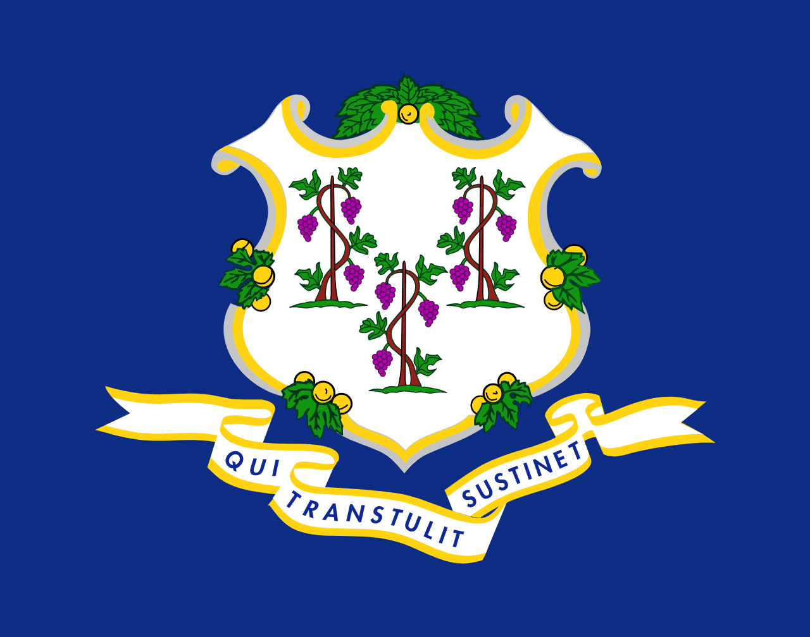

Country/State Tips

Canada
- Landscape: Extremely diverse - from the Rocky Mountains in the west, through the
vast prairies in the center, to the Canadian Shield and Appalachian Mountains in the east. Arctic
tundra in the north, and temperate rainforests on the Pacific coast.
- Street View Coverage: Good coverage in major cities and along main highways. Some
rural areas and northern regions may have limited coverage.
- Road Signage:
- Trans-Canada Highway: Green signs with maple leaf symbol, numbered 1-16.
Province/Territory Tips
Alberta
- Landscape: Western province featuring the Rocky Mountains,
prairies, and boreal forests. Known for its oil sands and national parks like Banff
and Jasper.
- Street View Coverage: Good coverage in major cities (Edmonton,
Calgary) and along major highways. Some rural areas may have limited coverage.
- Road Signage:
- Highways: Blue signs with white text, labeled "AB" + number (e.g., AB-2).
- City streets: Standard Canadian signage with bilingual options in some areas.
British Columbia
- Landscape: Diverse landscapes including coastal rainforests,
mountains, and islands. Known for its Pacific coastline and ski resorts.
- Street View Coverage: Extensive coverage in urban areas (Vancouver,
Victoria) and along major highways. Some remote areas may have limited coverage.
- Road Signage:
- Highways: Blue signs with white text, labeled "BC" + number (e.g., BC-1).
- City streets: Standard Canadian signage with bilingual options in some areas.
Manitoba
- Landscape: Features prairies, lakes, and boreal forests. Known for
its agricultural areas and wildlife.
- Street View Coverage: Good coverage in major cities (Winnipeg) and
along major highways. Some rural areas may have limited coverage.
- Road Signage:
- Highways: Blue signs with white text, labeled "MB" + number (e.g., MB-1).
- City streets: Standard Canadian signage with bilingual options in some areas.
New Brunswick
- Landscape: Features forests, rivers, and coastal areas. Known for
its maritime culture and seafood.
- Street View Coverage: Good coverage in major cities (Fredericton,
Saint John) and along major highways. Some rural areas may have limited coverage.
- Road Signage:
- Highways: Blue signs with white text, labeled "NB" + number (e.g., NB-1).
- City streets: Standard Canadian signage with bilingual options in some areas.
Newfoundland and Labrador
- Landscape: Features rugged coastlines, fjords, and forests. Known
for its fishing industry and natural beauty.
- Street View Coverage: Limited coverage, mainly in major cities (St.
John's) and along major highways. Many rural areas lack coverage.
- Road Signage:
- Highways: Blue signs with white text, labeled "NL" + number (e.g., NL-1).
- City streets: Standard Canadian signage with bilingual options in some areas.
Nova Scotia
- Landscape: Features coastal areas, forests, and rolling hills.
Known for its maritime culture and seafood.
- Street View Coverage: Good coverage in major cities (Halifax) and
along major highways. Some rural areas may have limited coverage.
- Road Signage:
- Highways: Blue signs with white text, labeled "NS" + number (e.g., NS-101).
- City streets: Standard Canadian signage with bilingual options in some areas.
Ontario
- Landscape: Features lakes, forests, and urban centers. Known for
its Great Lakes and Niagara Falls.
- Street View Coverage: Extensive coverage in major cities (Toronto,
Ottawa) and along major highways. Some rural areas may have limited coverage.
- Road Signage:
- Highways: Blue signs with white text, labeled "ON" + number (e.g., ON-401).
- City streets: Standard Canadian signage with bilingual options in some areas.
Prince Edward Island
- Landscape: Features rolling hills, red soil, and coastal areas.
Known for its agricultural areas and seafood.
- Street View Coverage: Good coverage in major cities (Charlottetown)
and along major highways. Some rural areas may have limited coverage.
- Road Signage:
- Highways: Blue signs with white text, labeled "PE" + number (e.g., PE-1).
- City streets: Standard Canadian signage with bilingual options in some areas.
Quebec
- Landscape: Features forests, rivers, and urban centers. Known for
its French culture and cuisine.
- Street View Coverage: Extensive coverage in major cities (Montreal,
Quebec City) and along major highways. Some rural areas may have limited coverage.
- Road Signage:
- Highways: Blue signs with white text, labeled "QC" + number (e.g., QC-20).
- City streets: Standard Canadian signage with bilingual options in some areas.
Saskatchewan
- Landscape: Features prairies, forests, and lakes. Known for its
agricultural areas and wildlife.
- Street View Coverage: Good coverage in major cities (Regina,
Saskatoon) and along major highways. Some rural areas may have limited coverage.
- Road Signage:
- Highways: Blue signs with white text, labeled "SK" + number (e.g., SK-1).
- City streets: Standard Canadian signage with bilingual options in some areas.
Northwest Territories
- Landscape: Features tundra, forests, and lakes. Known for its
wildlife and natural beauty.
- Street View Coverage: Limited coverage, mainly in major cities
(Yellowknife) and along major highways. Many rural areas lack coverage.
- Road Signage:
- Highways: Blue signs with white text, labeled "NT" + number (e.g., NT-1).
- City streets: Standard Canadian signage with bilingual options in some areas.
Nunavut
- Landscape: Features tundra, ice, and mountains. Known for its
wildlife and natural beauty.
- Street View Coverage: Limited coverage, mainly in major cities
(Iqaluit) and along major highways. Many rural areas lack coverage.
- Road Signage:
- Highways: Blue signs with white text, labeled "NU" + number (e.g., NU-1).
- City streets: Standard Canadian signage with bilingual options in some areas.
Yukon
- Landscape: Features mountains, forests, and rivers. Known for its
wildlife and natural beauty.
- Street View Coverage: Limited coverage, mainly in major cities
(Whitehorse) and along major highways. Many rural areas lack coverage.
- Road Signage:
- Highways: Blue signs with white text, labeled "YT" + number (e.g., YT-1).
- City streets: Standard Canadian signage with bilingual options in some areas.

United States
- Landscape: Incredibly diverse - from the Pacific Coast and Rocky Mountains in the west,
through the Great Plains in the center, to the Appalachian Mountains and Atlantic Coast in the east.
Includes deserts, rainforests, tundra, and everything in between.
- Street View Coverage: Excellent coverage nationwide, including most rural areas and
small towns. Regular updates in major cities.
- Road Signage:
- Interstate Highways: Red, white, and blue shield signs, numbered I-XX. Even
numbers for east-west routes, odd for north-south.
- US Highways: White shield signs with black numbers. Similar numbering system to
Interstates.
- State Highways: Each state has its own system and design.
- City Streets: Typically use "Street", "Avenue", "Road", "Drive", "Boulevard",
"Lane", "Court", "Place", "Circle", "Way". Grid systems common in many cities.
States
Alabama
- Landscape: Mostly flat to gently rolling terrain in the south, with the
Appalachian Mountains in the north. Dense forests and numerous rivers.
- Street View Coverage: Good coverage throughout, especially in urban areas
like Birmingham and Mobile.
- Road Signage: State highways marked with "AL" prefix. City streets often
use numbered grid systems.
Alaska
- Landscape: Massive state with diverse terrain - mountains (including
Denali), glaciers, tundra, and coastal regions. Many areas only accessible by plane or boat.
- Street View Coverage: Limited to major roads and populated areas. Many
remote areas not covered.
- Road Signage: State highways marked with "AK" prefix. Many roads are gravel
or seasonal.
Arizona
- Landscape: Desert landscapes, including the Sonoran Desert, with the Grand
Canyon and red rock formations. Higher elevations in the north with pine forests.
- Street View Coverage: Good coverage, especially along major highways and in
cities like Phoenix and Tucson.
- Road Signage: State highways marked with "AZ" prefix. Many scenic routes
through national parks.
Arkansas
- Landscape: Ozark Mountains in the north, Ouachita Mountains in the west,
and the Mississippi River Delta in the east.
- Street View Coverage: Good coverage throughout, especially in urban areas.
- Road Signage: State highways marked with "AR" prefix. Many scenic mountain
roads.

California
- Landscape: Extremely diverse - Pacific coastline, Sierra Nevada mountains,
Central Valley, and deserts (Mojave, Death Valley).
- Street View Coverage: Excellent coverage throughout, including major cities
and scenic routes.
- Road Signage: State highways marked with "CA" prefix. Many scenic coastal
and mountain routes.
Colorado
- Landscape: Rocky Mountains dominate the west, high plains in the east. Many
14,000+ foot peaks.
- Street View Coverage: Good coverage, especially along major highways and in
cities.
- Road Signage: State highways marked with "CO" prefix. Many high mountain
passes.

Connecticut
- Landscape: Rolling hills, forests, and coastal areas along Long Island
Sound.
- Street View Coverage: Excellent coverage throughout this small state.
- Road Signage: State highways marked with "CT" prefix. Many historic towns
and villages.
Delaware
- Landscape: Flat coastal plain with beaches along the Atlantic Ocean.
- Street View Coverage: Good coverage throughout this small state.
- Road Signage: State highways marked with "DE" prefix. Many coastal routes.
Florida
- Landscape: Flat peninsula with extensive wetlands (Everglades), beaches,
and tropical vegetation in the south.
- Street View Coverage: Excellent coverage throughout, including major
tourist areas.
- Road Signage: State highways marked with "FL" prefix. Many scenic coastal
routes.
Georgia
- Landscape: Appalachian Mountains in the north, rolling hills in the center,
and coastal plains in the south.
- Street View Coverage: Good coverage throughout, especially in urban areas.
- Road Signage: State highways marked with "GA" prefix. Many historic routes.
Hawaii
- Landscape: Volcanic islands with tropical vegetation, beaches, and dramatic
cliffs.
- Street View Coverage: Good coverage on major islands, especially tourist
areas.
- Road Signage: State highways marked with "HI" prefix. Many scenic coastal
routes.
Idaho
- Landscape: Rocky Mountains in the north, Snake River Plain in the south,
and numerous forests.
- Street View Coverage: Good coverage along major highways and in cities.
- Road Signage: State highways marked with "ID" prefix. Many scenic mountain
routes.
Illinois
- Landscape: Mostly flat prairie land with some rolling hills in the north.
Lake Michigan shoreline in the northeast.
- Street View Coverage: Excellent coverage throughout, especially in Chicago
area.
- Road Signage: State highways marked with "IL" prefix. Extensive grid system
in Chicago.
Indiana
- Landscape: Mostly flat with some rolling hills in the south. Lake Michigan
shoreline in the north.
- Street View Coverage: Good coverage throughout, especially in urban areas.
- Road Signage: State highways marked with "IN" prefix. Many historic routes.
Iowa
- Landscape: Rolling hills and prairies, with the Mississippi River forming
the eastern border.
- Street View Coverage: Good coverage throughout, especially along major
highways.
- Road Signage: State highways marked with "IA" prefix. Many scenic rural
routes.
Kansas
- Landscape: Mostly flat prairie land with some rolling hills in the east.
- Street View Coverage: Good coverage along major highways and in cities.
- Road Signage: State highways marked with "KS" prefix. Many long, straight
roads.
Kentucky
- Landscape: Appalachian Mountains in the east, rolling hills in the center,
and the Mississippi River in the west.
- Street View Coverage: Good coverage throughout, especially in urban areas.
- Road Signage: State highways marked with "KY" prefix. Many scenic routes
through horse country.
Louisiana
- Landscape: Mostly flat with extensive wetlands, including the Mississippi
Delta and bayous.
- Street View Coverage: Good coverage throughout, especially in urban areas.
- Road Signage: State highways marked with "LA" prefix. Many routes through
wetlands.
Maine
- Landscape: Rocky coastline, dense forests, and mountains in the interior.
- Street View Coverage: Good coverage along major highways and coastal areas.
- Road Signage: State highways marked with "ME" prefix. Many scenic coastal
routes.
Maryland
- Landscape: Chesapeake Bay divides the state, with coastal plains in the
east and mountains in the west.
- Street View Coverage: Excellent coverage throughout, especially in urban
areas.
- Road Signage: State highways marked with "MD" prefix. Many historic routes.
Massachusetts
- Landscape: Coastal plains, rolling hills, and mountains in the west.
- Street View Coverage: Excellent coverage throughout, especially in Boston
area.
- Road Signage: State highways marked with "MA" prefix. Many historic routes.
Michigan
- Landscape: Great Lakes shoreline, forests, and rolling hills. Upper and
Lower Peninsulas.
- Street View Coverage: Good coverage throughout, especially in urban areas.
- Road Signage: State highways marked with "MI" prefix. Many scenic coastal
routes.
Minnesota
- Landscape: Thousands of lakes, forests, and the Mississippi River
headwaters.
- Street View Coverage: Good coverage throughout, especially in urban areas.
- Road Signage: State highways marked with "MN" prefix. Many scenic lake
routes.
Mississippi
- Landscape: Mostly flat with rolling hills in the north and Gulf Coast in
the south.
- Street View Coverage: Good coverage throughout, especially in urban areas.
- Road Signage: State highways marked with "MS" prefix. Many historic routes.
Missouri
- Landscape: Ozark Mountains in the south, rolling hills in the north, and
the Mississippi River in the east.
- Street View Coverage: Good coverage throughout, especially in urban areas.
- Road Signage: State highways marked with "MO" prefix. Many scenic routes.
Montana
- Landscape: Rocky Mountains in the west, Great Plains in the east.
- Street View Coverage: Good coverage along major highways and in cities.
- Road Signage: State highways marked with "MT" prefix. Many scenic mountain
routes.
Nebraska
- Landscape: Mostly flat prairie land with some rolling hills in the east.
- Street View Coverage: Good coverage along major highways and in cities.
- Road Signage: State highways marked with "NE" prefix. Many long, straight
roads.
Nevada
- Landscape: Mostly desert with mountain ranges running north-south.
- Street View Coverage: Good coverage along major highways and in cities.
- Road Signage: State highways marked with "NV" prefix. Many scenic desert
routes.
New Hampshire
- Landscape: White Mountains in the north, lakes and forests throughout.
- Street View Coverage: Good coverage throughout, especially in tourist
areas.
- Road Signage: State highways marked with "NH" prefix. Many scenic mountain
routes.
New Jersey
- Landscape: Coastal plains, rolling hills, and the Appalachian Mountains in
the northwest.
- Street View Coverage: Excellent coverage throughout this densely populated
state.
- Road Signage: State highways marked with "NJ" prefix. Many parkways and
turnpikes.
New Mexico
- Landscape: High desert, mountains, and mesas. Part of the Rocky Mountains
in the north.
- Street View Coverage: Good coverage along major highways and in cities.
- Road Signage: State highways marked with "NM" prefix. Many scenic desert
routes.
New York
- Landscape: Adirondack Mountains in the north, Finger Lakes region, and
Atlantic coastline.
- Street View Coverage: Excellent coverage throughout, especially in NYC.
- Road Signage: State highways marked with "NY" prefix. Many parkways and
expressways.
North Carolina
- Landscape: Appalachian Mountains in the west, Piedmont region in the
center, and coastal plain in the east.
- Street View Coverage: Good coverage throughout, especially in urban areas.
- Road Signage: State highways marked with "NC" prefix. Many scenic mountain
and coastal routes.
North Dakota
- Landscape: Mostly flat prairie land with some rolling hills in the west.
- Street View Coverage: Good coverage along major highways and in cities.
- Road Signage: State highways marked with "ND" prefix. Many long, straight
roads.
Ohio
- Landscape: Mostly flat with rolling hills in the east and Lake Erie
shoreline in the north.
- Street View Coverage: Good coverage throughout, especially in urban areas.
- Road Signage: State highways marked with "OH" prefix. Many historic routes.
Oklahoma
- Landscape: Rolling hills, prairies, and mountains in the southeast.
- Street View Coverage: Good coverage throughout, especially in urban areas.
- Road Signage: State highways marked with "OK" prefix. Many scenic routes.
Oregon
- Landscape: Pacific coastline, Cascade Mountains, and high desert in the
east.
- Street View Coverage: Good coverage throughout, especially along major
highways.
- Road Signage: State highways marked with "OR" prefix. Many scenic coastal
and mountain routes.
Pennsylvania
- Landscape: Appalachian Mountains, rolling hills, and forests throughout.
- Street View Coverage: Good coverage throughout, especially in urban areas.
- Road Signage: State highways marked with "PA" prefix. Many scenic mountain
routes.
Rhode Island
- Landscape: Coastal plains with numerous bays and inlets.
- Street View Coverage: Good coverage throughout this small state.
- Road Signage: State highways marked with "RI" prefix. Many scenic coastal
routes.
South Carolina
- Landscape: Blue Ridge Mountains in the northwest, rolling hills in the
center, and coastal plain in the east.
- Street View Coverage: Good coverage throughout, especially in urban areas.
- Road Signage: State highways marked with "SC" prefix. Many scenic coastal
routes.
South Dakota
- Landscape: Black Hills in the west, Badlands, and rolling prairies in the
east.
- Street View Coverage: Good coverage along major highways and in cities.
- Road Signage: State highways marked with "SD" prefix. Many scenic routes
through national parks.
Tennessee
- Landscape: Appalachian Mountains in the east, rolling hills in the center,
and the Mississippi River in the west.
- Street View Coverage: Good coverage throughout, especially in urban areas.
- Road Signage: State highways marked with "TN" prefix. Many scenic mountain
routes.
Texas
- Landscape: Extremely diverse - from Gulf Coast beaches to high plains,
deserts, and mountains.
- Street View Coverage: Good coverage throughout this large state.
- Road Signage: State highways marked with "TX" prefix. Many long, straight
roads.
Utah
- Landscape: Rocky Mountains, high desert, and unique red rock formations.
- Street View Coverage: Good coverage along major highways and in cities.
- Road Signage: State highways marked with "UT" prefix. Many scenic routes
through national parks.
Vermont
- Landscape: Green Mountains running north-south, forests, and lakes
throughout.
- Street View Coverage: Good coverage throughout, especially in tourist
areas.
- Road Signage: State highways marked with "VT" prefix. Many scenic mountain
routes.
Virginia
- Landscape: Blue Ridge Mountains in the west, rolling hills in the center,
and coastal plain in the east.
- Street View Coverage: Good coverage throughout, especially in urban areas.
- Road Signage: State highways marked with "VA" prefix. Many historic routes.
Washington
- Landscape: Pacific coastline, Cascade Mountains, and high desert in the
east.
- Street View Coverage: Good coverage throughout, especially along major
highways.
- Road Signage: State highways marked with "WA" prefix. Many scenic coastal
and mountain routes.
West Virginia
- Landscape: Entirely within the Appalachian Mountains, with dense forests
and rivers.
- Street View Coverage: Good coverage throughout, especially in urban areas.
- Road Signage: State highways marked with "WV" prefix. Many scenic mountain
routes.
Wisconsin
- Landscape: Great Lakes shoreline, forests, and rolling hills throughout.
- Street View Coverage: Good coverage throughout, especially in urban areas.
- Road Signage: State highways marked with "WI" prefix. Many scenic lake
routes.
Wyoming
- Landscape: Rocky Mountains, high plains, and Yellowstone National Park.
- Street View Coverage: Good coverage along major highways and in cities.
- Road Signage: State highways marked with "WY" prefix. Many scenic mountain
routes.

Mexico
- Landscape: Diverse terrain including deserts in the north, tropical rainforests in the
south, high plateaus in the center, and long coastlines on both Pacific and Gulf sides. Mountain ranges
include Sierra Madre Oriental and Occidental.
- Street View Coverage: Good coverage in major cities and along main highways. Some rural
areas may have limited coverage.
- Road Signage:
- Federal Highways: Green signs with "Mxico" prefix and number (e.g., Mxico 1, Mxico
15).
- State Highways: Each state has its own system, usually marked with state
abbreviation and number.
- City Streets: Often use "Calle" (street), "Avenida" (avenue), "Boulevard",
"Carretera" (highway), "Camino" (road). Many cities use a grid system with numbered streets.
States
Aguascalientes
- Landscape: Small state in central Mexico with rolling hills and valleys. Known for its hot springs and colonial architecture.
- Street View Coverage: Good coverage in the capital city and along major highways.
- Road Signage: State highways marked with "AGS" prefix. City streets follow standard Mexican naming conventions.
Baja California
- Landscape: Long peninsula with desert landscapes, mountains, and beautiful Pacific coastline.
- Street View Coverage: Good coverage along the main highway (MEX 1) and in major cities like Tijuana and Mexicali.
- Road Signage: State highways marked with "BC" prefix. Many scenic coastal routes.
Baja California Sur
- Landscape: Southern part of the Baja peninsula with desert, mountains, and pristine beaches.
- Street View Coverage: Good coverage in major cities like La Paz and Cabo San Lucas.
- Road Signage: State highways marked with "BCS" prefix. Many scenic coastal routes.
Campeche
- Landscape: Coastal state with tropical forests, Mayan ruins, and Gulf of Mexico beaches.
- Street View Coverage: Limited coverage, mainly in the capital city and along major highways.
- Road Signage: State highways marked with "CAMP" prefix. Many routes through archaeological sites.
Chiapas
- Landscape: Mountainous state with tropical rainforests, Mayan ruins, and beautiful waterfalls.
- Street View Coverage: Limited coverage, mainly in major cities and tourist areas.
- Road Signage: State highways marked with "CHIS" prefix. Many scenic mountain routes.
Chihuahua
- Landscape: Largest state with desert landscapes, mountains, and the famous Copper Canyon.
- Street View Coverage: Good coverage in major cities and along main highways.
- Road Signage: State highways marked with "CHIH" prefix. Many scenic routes through the Sierra Madre.
Coahuila
- Landscape: Northern state with desert landscapes, mountains, and the famous Cuatro Cinegas biosphere reserve.
- Street View Coverage: Good coverage in major cities and along main highways.
- Road Signage: State highways marked with "COAH" prefix. Many routes through desert landscapes.
Colima
- Landscape: Small state with active volcanoes, tropical forests, and Pacific coastline.
- Street View Coverage: Good coverage in the capital city and along major highways.
- Road Signage: State highways marked with "COL" prefix. Many scenic routes through volcanic landscapes.
Mexico City
- Landscape: High-altitude valley surrounded by mountains, including the famous Popocatpetl volcano.
- Street View Coverage: Excellent coverage throughout the city and surrounding areas.
- Road Signage: Complex system with expressways (Perifrico), major avenues (Paseo de la Reforma), and numbered streets in many neighborhoods.
Durango
- Landscape: Mountainous state with pine forests, canyons, and desert areas.
- Street View Coverage: Good coverage in major cities and along main highways.
- Road Signage: State highways marked with "DGO" prefix. Many scenic mountain routes.
Guanajuato
- Landscape: Central state with colonial cities, mountains, and the famous mummy museum.
- Street View Coverage: Good coverage in major cities and along main highways.
- Road Signage: State highways marked with "GTO" prefix. Many historic routes through colonial towns.
Guerrero
- Landscape: Pacific coast state with beaches, mountains, and the famous Acapulco bay.
- Street View Coverage: Good coverage in major tourist areas and along main highways.
- Road Signage: State highways marked with "GRO" prefix. Many scenic coastal routes.
Hidalgo
- Landscape: Central state with mountains, canyons, and the famous Prismas Baslticos.
- Street View Coverage: Good coverage in major cities and along main highways.
- Road Signage: State highways marked with "HGO" prefix. Many scenic mountain routes.
Jalisco
- Landscape: Western state with mountains, Lake Chapala, and Pacific coastline. Home to tequila production.
- Street View Coverage: Good coverage in major cities and along main highways.
- Road Signage: State highways marked with "JAL" prefix. Many scenic routes through tequila country.
Mexico State
- Landscape: Surrounds Mexico City with mountains, forests, and the famous Nevado de Toluca volcano.
- Street View Coverage: Good coverage throughout, especially in urban areas.
- Road Signage: State highways marked with "MEX" prefix. Many routes connecting to Mexico City.
Michoacn
- Landscape: Western state with mountains, Lake Ptzcuaro, and the famous monarch butterfly sanctuaries.
- Street View Coverage: Good coverage in major cities and along main highways.
- Road Signage: State highways marked with "MICH" prefix. Many scenic routes through the Sierra Madre.
Morelos
- Landscape: Small state south of Mexico City with mountains, hot springs, and the famous Tepoztln pyramid.
- Street View Coverage: Good coverage throughout, especially in tourist areas.
- Road Signage: State highways marked with "MOR" prefix. Many scenic routes through the mountains.
Nayarit
- Landscape: Pacific coast state with beaches, mountains, and the famous Marietas Islands.
- Street View Coverage: Good coverage in major tourist areas and along main highways.
- Road Signage: State highways marked with "NAY" prefix. Many scenic coastal routes.
Nuevo Len
- Landscape: Northern state with mountains, canyons, and the famous Chipinque ecological park.
- Street View Coverage: Good coverage in major cities and along main highways.
- Road Signage: State highways marked with "NL" prefix. Many scenic mountain routes.
Oaxaca
- Landscape: Southern state with mountains, beaches, and the famous Monte Albn ruins.
- Street View Coverage: Good coverage in major cities and tourist areas.
- Road Signage: State highways marked with "OAX" prefix. Many scenic routes through the Sierra Madre.
Puebla
- Landscape: Central state with mountains, including the famous Popocatpetl volcano, and colonial cities.
- Street View Coverage: Good coverage in major cities and along main highways.
- Road Signage: State highways marked with "PUE" prefix. Many scenic routes through the mountains.
Quertaro
- Landscape: Central state with mountains, colonial cities, and the famous Pea de Bernal monolith.
- Street View Coverage: Good coverage in major cities and along main highways.
- Road Signage: State highways marked with "QRO" prefix. Many scenic routes through the Sierra Gorda.
Quintana Roo
- Landscape: Caribbean coast state with beaches, Mayan ruins, and the famous Riviera Maya.
- Street View Coverage: Good coverage in major tourist areas and along main highways.
- Road Signage: State highways marked with "QR" prefix. Many scenic coastal routes.
San Luis Potos
- Landscape: Central state with mountains, desert, and the famous Real de Catorce ghost town.
- Street View Coverage: Good coverage in major cities and along main highways.
- Road Signage: State highways marked with "SLP" prefix. Many scenic routes through the desert.
Sinaloa
- Landscape: Pacific coast state with beaches, mountains, and agricultural valleys.
- Street View Coverage: Good coverage in major cities and along main highways.
- Road Signage: State highways marked with "SIN" prefix. Many scenic coastal routes.
Sonora
- Landscape: Northern state with desert landscapes, mountains, and the famous El Pinacate biosphere reserve.
- Street View Coverage: Good coverage in major cities and along main highways.
- Road Signage: State highways marked with "SON" prefix. Many scenic routes through the Sonoran Desert.
Tabasco
- Landscape: Southern state with tropical forests, rivers, and the famous La Venta archaeological site.
- Street View Coverage: Good coverage in major cities and along main highways.
- Road Signage: State highways marked with "TAB" prefix. Many routes through the jungle.
Tamaulipas
- Landscape: Northern state with Gulf coast beaches, mountains, and the famous El Cielo biosphere reserve.
- Street View Coverage: Good coverage in major cities and along main highways.
- Road Signage: State highways marked with "TAM" prefix. Many scenic coastal routes.
Tlaxcala
- Landscape: Small state with mountains, colonial cities, and the famous Cacaxtla archaeological site.
- Street View Coverage: Good coverage in major cities and along main highways.
- Road Signage: State highways marked with "TLAX" prefix. Many scenic routes through the mountains.
Veracruz
- Landscape: Gulf coast state with beaches, mountains, and the famous Pico de Orizaba volcano.
- Street View Coverage: Good coverage in major cities and along main highways.
- Road Signage: State highways marked with "VER" prefix. Many scenic coastal routes.
Yucatn
- Landscape: Peninsula state with Mayan ruins, cenotes, and the famous Chichn Itz.
- Street View Coverage: Good coverage in major cities and tourist areas.
- Road Signage: State highways marked with "YUC" prefix. Many routes through archaeological sites.
Zacatecas
- Landscape: Central state with mountains, colonial cities, and the famous La Bufa hill.
- Street View Coverage: Good coverage in major cities and along main highways.
- Road Signage: State highways marked with "ZAC" prefix. Many scenic routes through the mountains.